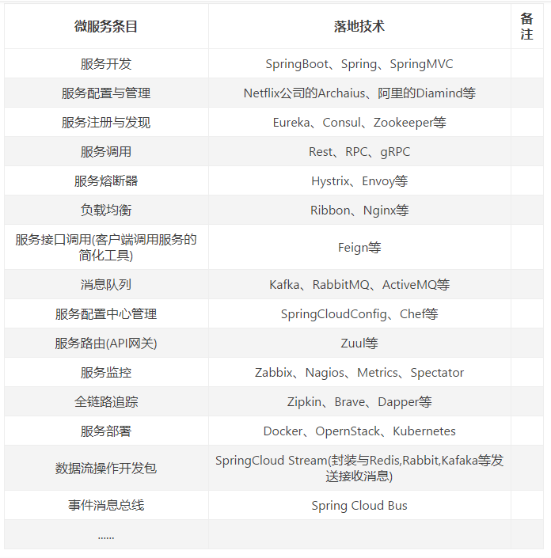

最近在公司写文档，可以抽出时间来充实一下自己，我打算认认真真的学一遍 springCloud，然后将我会尽可能详细的将自己学习的过程记录下来……
好了，废话不多说，SpringCloud 走起！……
SpringCloud 官网：Spring.io以及SpringCloud 介绍
SpringCloud 中文：中文文档
二：SpringCloud 的学习目录
这个是我自己的学习路线，我会将我最近学习成果一一记录，主要是能巩固自己对 SpringCloud 的理解与运行
SpringCloud 的总架构介绍
SpringCloud 的服务注册与发现
SpringCloud 的消费实现
SpringCloud 的断路器实现
这个目录会不断更新……
三：为什么我要学习微服务？
这也是我在学习之前问自己的一个问题，我为什么要学微服务，学 springcloud……我真的用的上吗？……
1.为什么要学微服务
我个人的话，想分几点回答吧！
① 微服务是趋势，现在很多公司都想要引入微服务的实现技术
② 微服务对比单体架构的优点非常明显，在下面我会用问答的方式回答他们的对比
③ 学习微服务能提升自己的技术实力，在搭建的 SpringCloud 过程中能学一下搭建所用的方法和里面包含的技术
④ 好吧，这个才是重头戏！最近在公司写文档，太无聊了，觉得需要些新东西来刺激一下自己
2.学 springcloud 我用的上吗？
① 这个其实就我这个今年毕业的小菜鸟来说，好像是用不上的，但是作为技术储备，我觉得还是可以好好学习和研究一下的
② 学习 springcloud 的同时，我可以在学习的过程中了解微服务的思想，这对于未来的我来说是一个好的东西。
希望在学习之前先问自己这些问题，这样能在学习过程不会觉得很乏味，并且充满冲劲！
四：微服务是什么？
好吧，和别的博主一样，在学习一个技术之前，先了解一下这个技术的相关理论知识（为了面试的时候能更好的吹 X，能提高自己的谈薪资格……O(∩_∩)O）
1：微服务是什么呢？
我觉得微服务是一种架构风格，模块化系统。
Martin Fowler 对微服务的描述：
微服务架构风格是一种将一个单一应用程序开发为一组小型服务的方法，每个服务运行再自己的进程种，服务间通信采用轻量及通信机制（通常用 HTTP 资源 API）。这些服务围绕业务能力构建并且可通过全自动部署机制独立部署。这些服务公用一个最小型的集中式管理，服务可用不同的语言开发，使用不同的数据存储技术。
又臭又长是吧，总结就一句话：
将单一的文件项目划分为一组小的服务（模块），每个服务运行在其独立的自己的进程中
2：微服务架构是什么？
一种架构模式，提倡多个小的服务之间相互协调配合，低耦合开发
特征：
- 每个微服务可独立运行在自己的进程里
- 一系列独立运行的微服务共同构建器整个系统
- 每个服务为独立的业务开发，一个微服务只关注某个特定的功能
- 微服务之间通过一些轻量的通信机制进行通信，比如：同故宫 RestFulApi 进行调用
- 可以使用不同的语言与数据存储技术
- 全自动的部署机制
3：微服务的优点是什么？
在说微服务的优点之前，先说说单体架构的优缺点
单体架构：
优点：
容易测试
容易部署
缺点：
开发效率低
代码维护难
部署不灵活
稳定性不高
扩展性不好
说完单体架构的优缺点，在来看看微服务的优缺点
微服务架构
优点：
每个服务足够内聚，足够小，容易理解聚焦一个指定的业务功能和业务需求
开发简单，开发效率提高，一个服务只干一件事
微服务能够被小团队独立开发
微服务是松耦合的，有功能意义的服务，开发和部署都是独立的
微服务能使用不同的语言开发
易于被开发人员理解，修改和维护
允许利用融合最新的技术
每个微服务都有自己的存储能力，可以有自己的数据库，也可以有统一的数据库
……
缺点：
开发人员要处理分布式系统的复杂性
多服务运维难度，随着服务的增加，运维的压力也越大
系统部署依赖
服务间的通信成本
数据一致性
性能监控
……
就先写这么多了。之后我会在后面附上相关的面试题，不断积累吧！
五：微服务的面试题
1.什么是微服务？
微服务英文名称 Microservice，Microservice 架构模式就是将整个 Web 应用组织为一系列小的 Web 服务。这些小的 Web 服务可以独立地编译及部署，并通过各自暴露的 API 接口相互通讯。它们彼此相互协作，作为一个整体为用户提供功能，却可以独立地进行扩。
微服务架构需要的功能或使用场景
1：我们把整个系统根据业务拆分成几个子系统。
2：每个子系统可以部署多个应用，多个应用之间使用负载均衡。
3：需要一个服务注册中心，所有的服务都在注册中心注册，负载均衡也是通过在注册中心注册的服务来使用一定策略来实现。
4：所有的客户端都通过同一个网关地址访问后台的服务，通过路由配置，网关来判断一个 URL 请求由哪个服务处理。请求转发到服务上的时候也使用负载均衡。
5：服务之间有时候也需要相互访问。例如有一个用户模块，其他服务在处理一些业务的时候，要获取用户服务的用户数据。
6：需要一个断路器，及时处理服务调用时的超时和错误，防止由于其中一个服务的问题而导致整体系统的瘫痪。
7：还需要一个监控功能，监控每个服务调用花费的时间等。
目前主流的微服务框架：Dubbo、 SpringCloud、thrift、Hessian 等，目前国内的中小企业用的大多数都是 Dubbo，SpringCloud。
2.微服务架构是什么？
答案在上面有回答！
3.微服务的优缺点分别是什么？说下在项目开发中碰到的坑……
答案在上面有回答！
4.你所知道的微服务技术栈有哪些，列举……
